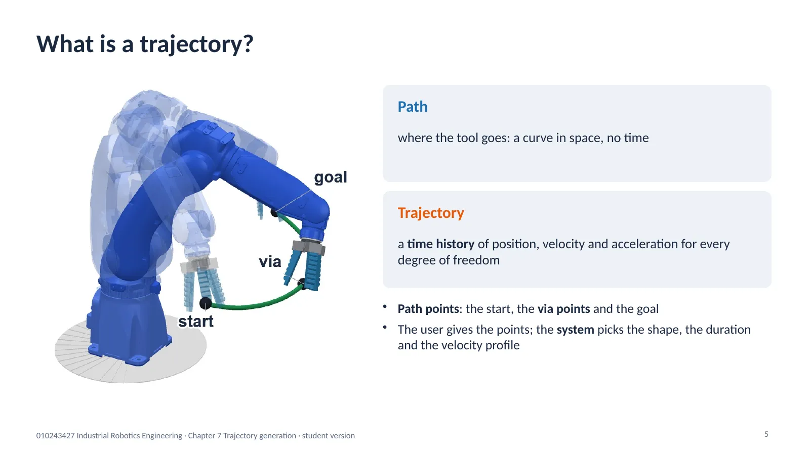
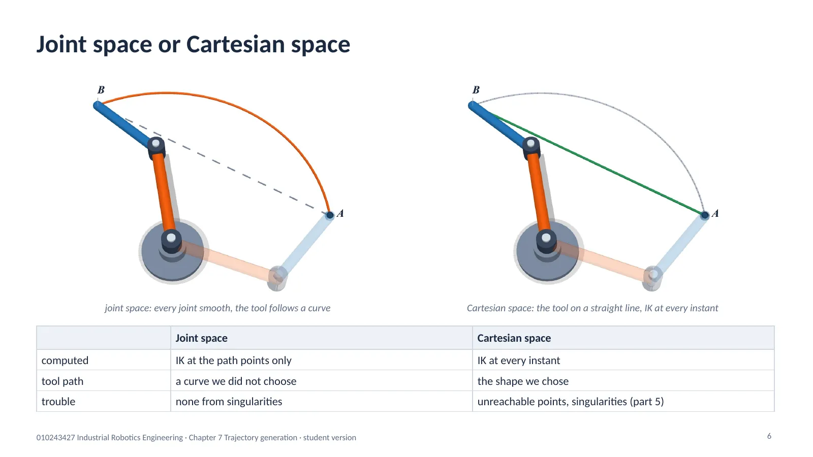
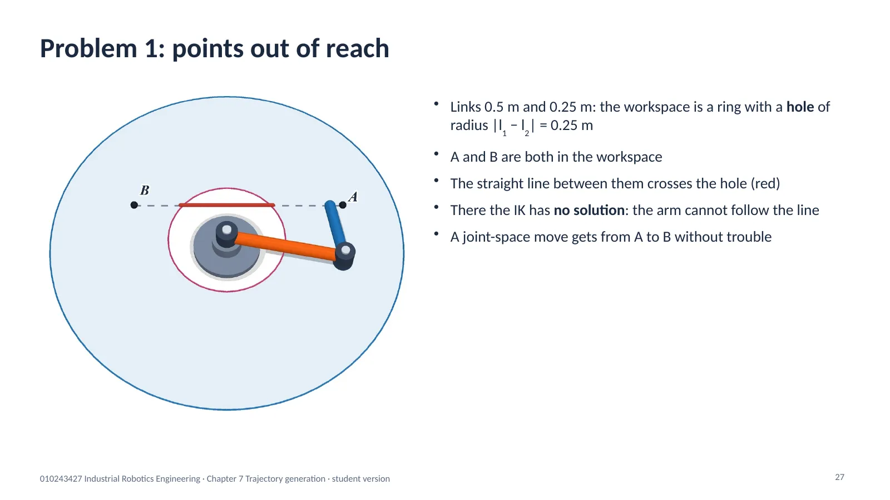
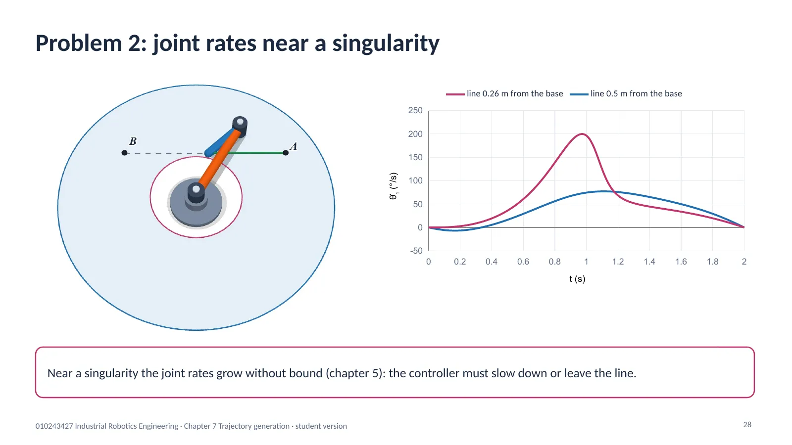

เส้นทางและแนววิถี Path and trajectory — how the arm gets from one pose to another, in time
Path and trajectory How a joint, and a whole arm, gets from one pose to another in time

บทที่ 3–6 บอกว่าแขนอยู่ที่ไหน (จลนศาสตร์) และเคลื่อนที่เร็วแค่ไหน (จาโคเบียน) บทที่ 7 ตอบคำถามถัดไป: จะพาแขนจากท่าหนึ่งไปอีกท่าอย่างนุ่มนวลได้อย่างไร คำตอบคือแนววิถี (trajectory): มุม θ ความเร็ว θ̇ และความเร่ง θ̈ ของทุกข้อต่อเป็นฟังก์ชันของเวลา ส่วนเส้นทาง (path) บอกเพียงว่าผ่านที่ไหน ผู้ใช้กำหนดเพียงจุดบนเส้นทาง คือจุดเริ่ม จุดผ่าน (via point) และเป้าหมาย ระบบเป็นผู้เลือกรูปร่างระหว่างจุด เวลาที่ใช้ และโพรไฟล์ความเร็ว หน้านี้ดูว่าฟังก์ชันของเวลาแบบไหนใช้ได้ การวางแผนในปริภูมิข้อต่อ (joint space) กับในปริภูมิคาร์ทีเซียน (Cartesian space) และปัญหาของการให้ปลายเครื่องมือเดินเป็นเส้นตรง หน้านี้ครอบคลุมสไลด์หน้า 5–7, 24 และ 26–29 มี 4 โจทย์
Chapters 3–6 told where the arm is (kinematics) and how fast it moves (the Jacobian). Chapter 7 answers the next question: how to take the arm from one pose to another smoothly. The answer is a trajectory: the angle θ, the velocity θ̇ and the acceleration θ̈ of every joint as functions of time. A path only says where the arm passes. The user gives the path points (the start, the via points and the goal); the system picks the shape between them, the duration and the velocity profile. This page looks at which functions of time will do, at planning in joint space or in Cartesian space, and at what goes wrong when the tool must follow a straight line. It covers slides pp. 5–7, 24 and 26–29, with 4 problems.
ประเด็นสำคัญของหน้านี้
- เส้นทางกับแนววิถี: เส้นทางคือเส้นที่ปลายเครื่องมือผ่าน ไม่มีเวลา แนววิถีบอก \(\theta(t),\ \dot\theta(t),\ \ddot\theta(t)\) ของทุกข้อต่อ: อยู่ที่ไหน เมื่อไร และเร็วเท่าไร
- ฟังก์ชันต้องเรียบ: ถ้า θ(t) เป็นเส้นตรง ความเร็วจะกระโดดที่ต้นและปลาย ความเร่งจึงไม่มีขอบเขต (อิมพัลส์) ซึ่งมอเตอร์ทำไม่ได้ พหุนามกำลังสามและกำลังห้า (หน้า 7.2) และเส้นตรงต่อด้วยพาราโบลา (หน้า 7.3) เริ่มและหยุดอย่างนิ่ง
- ปริภูมิข้อต่อ: หาจลนศาสตร์ผกผัน (IK, inverse kinematics) เฉพาะที่จุดบนเส้นทาง แต่ละข้อต่อมีฟังก์ชันเรียบของตัวเองโดยใช้เวลาเท่ากัน ทุกข้อต่อจึงถึงพร้อมกัน ปลายเครื่องมือเดินเป็นเส้นโค้งที่เราไม่ได้เลือก
- ปริภูมิคาร์ทีเซียน: \(p(t) = A + s(t)\,(B - A)\) แล้วหา IK ทุกขณะ ปลายเครื่องมือเดินบนเส้นตรงที่เลือก แต่มีปัญหาเชิงเรขาคณิต: จุดที่ไปไม่ถึง ความเร็วข้อต่อที่สูงมากใกล้ภาวะเอกฐาน และจุดต้นกับจุดปลายที่อยู่คนละคำตอบของ IK (Craig 7.5) บนชุดควบคุมของ Yaskawa สองแบบนี้คือคำสั่ง MOVJ (move, joint interpolation) และ MOVL (move, linear interpolation)
Key points of this page
- Path and trajectory: a path is the curve the tool passes along, with no time in it. A trajectory gives \(\theta(t),\ \dot\theta(t),\ \ddot\theta(t)\) of every joint: where, when and how fast.
- The function must be smooth: if θ(t) is a straight line, the velocity jumps at both ends and the acceleration is unbounded (an impulse), which no motor can give. Cubic and quintic polynomials (page 7.2) and straight lines with parabolic blends (page 7.3) start and stop at rest.
- Joint space: inverse kinematics (IK) only at the path points; every joint gets its own smooth function with the same duration, so all joints arrive together. The tool follows a curve nobody chose.
- Cartesian space: \(p(t) = A + s(t)\,(B - A)\), then the IK at every instant. The tool follows the chosen straight line, but there are geometric problems: points out of reach, very high joint rates near a singularity, and start and goal in different IK solutions (Craig 7.5). On a Yaskawa controller the two are the instructions MOVJ (move, joint interpolation) and MOVL (move, linear interpolation).
แนววิถีคือฟังก์ชันของเวลา
A trajectory is a function of time

ปริภูมิข้อต่อหรือปริภูมิคาร์ทีเซียน
Joint space or Cartesian space

จุดที่ไปไม่ถึง
Points out of reach

ความเร็วข้อต่อใกล้ภาวะเอกฐาน
Joint rates near a singularity

ลองทำดู 1 — รูปร่างและวิธีวางแผน
- โจทย์ 1: เลือกเส้นตรงแล้วเลื่อน t ไปที่ 0 s และ s: ความเร็วกระโดด แล้วเลือกพหุนามกำลังห้า: ความเร่งก็เริ่มและจบที่ศูนย์ด้วย กราฟ θ̈ ไม่กระโดดเลย
- โจทย์ 2: เล่นทั้งสองวิธีแล้วดูข้อศอก: ในปริภูมิข้อต่อ θ₂ ค่อย ๆ ลดจาก ° เป็น ° ส่วนบนเส้นตรง ข้อศอกต้องงอเพิ่มจนถึงประมาณ ° ก่อนจะเหยียดออก
- โจทย์ 2: ดูอัตราสูงสุดในช่องตัวเลขใต้ภาพ: บนเส้นตรงทั้งสองข้อต่อหมุนเร็วกว่า ทั้งที่ปลายแขนเดินทางสั้นกว่า
ลองทำดู 2 — เมื่อเส้นตรงมีปัญหา
- โจทย์ 3: ตั้ง y = m: เส้นแตะขอบรูพอดีที่ x = 0 ตรงนั้น θ₂ = 180° (แขนพับสุด) จุดสีแดงหายไป แล้วไปดูอัตราของข้อต่อที่ความสูงเดียวกันในโจทย์ 4
- โจทย์ 4: ลดเส้นจาก m ลงมาที่ m แล้วดูอัตราสูงสุดของข้อต่อ 1 ใต้ภาพเพิ่มขึ้นเรื่อย ๆ
- ปัญหาข้อ 3 ของ Craig (7.5, สไลด์หน้า 29): จุดเริ่มไปถึงได้เฉพาะเมื่อข้อศอกงอทางหนึ่ง จุดปลายไปถึงได้เฉพาะเมื่อข้อศอกงออีกทาง (เพราะขีดจำกัดของข้อต่อ) ทั้งสองจุดไปถึงได้ แต่การเปลี่ยนท่าข้อศอกต้องผ่าน θ₂ = 0° หรือ 180° คือปลายแขนต้องไปแตะขอบของปริภูมิทำงาน เส้นตรงระหว่างสองจุดจึงทำไม่ได้โดยไม่ออกนอกเส้น ส่วนการเคลื่อนที่ในปริภูมิข้อต่อไม่มีปัญหานี้
- เลือกแบบไหน: ปริภูมิข้อต่อ (MOVJ) เมื่อย้ายระหว่างงาน คำนวณง่ายและไม่มีปัญหาภาวะเอกฐาน ปริภูมิคาร์ทีเซียน (MOVL) เมื่องานต้องการรูปร่างของเส้นทาง เช่น เชื่อม ทาซีลแลนต์ หรือสอดชิ้นงาน ตารางเปรียบเทียบอยู่ในขั้นสุดท้ายของโจทย์ 2
Try this 1 — shapes and plans
- Problem 1: choose the straight line and move t to 0 s and s: the velocity jumps. Then choose the quintic: its acceleration also starts and ends at zero, so the θ̈ plot does not jump at all.
- Problem 2: play both plans and watch the elbow. In joint space θ₂ goes steadily from ° down to °; on the straight line the elbow first bends further, up to about °, before it opens out.
- Problem 2: read the peak rates under the picture: on the straight line both joints turn faster, although the tool travels a shorter way.
Try this 2 — where straight lines fail
- Problem 3: set y = m: the line just touches the hole at x = 0, where θ₂ = 180° (the arm folded back). The red dots are gone; now look at the joint rates at the same height in problem 4.
- Problem 4: lower the line from m to m and watch the peak rate of joint 1 under the picture keep growing.
- Craig’s problem 3 (7.5, slide p. 29): the start can be reached only with the elbow bent one way, the goal only with it bent the other way (because of joint limits). Both are reachable, but changing the elbow means passing θ₂ = 0° or 180°, that is, touching the edge of the workspace, so the straight line between them cannot be followed without leaving it. A joint-space move has no such trouble.
- Which to choose: joint space (MOVJ) for moving between jobs, as it is easy to compute and free of singularity trouble; Cartesian space (MOVL) when the job needs the shape of the path, such as welding, sealing or inserting parts. The comparison table is in the last step of problem 2.